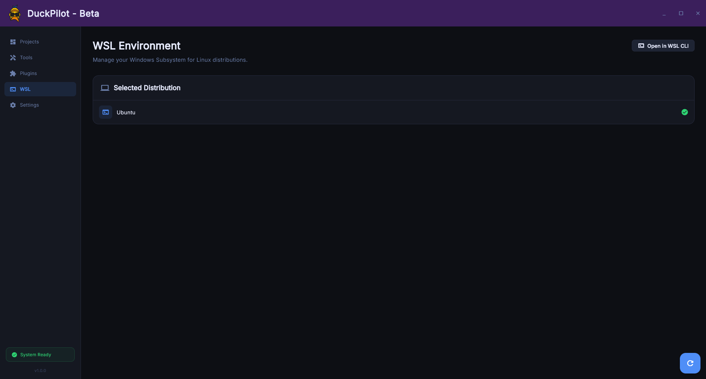

Streamline your local projects, integrate deeply with WSL, and scaffold apps instantly from one unified dashboard.

Watch how easily you can streamline your local development workflow.
A comprehensive Windows desktop application built with Flutter, designed to mitigate the friction of modern local development. It's your command center for everything code.
Built for developers of all skill levels.
Stop juggling terminals. DuckPilot puts your code, templates, and server commands into one beautiful window. No more typing long paths or forgetting startup commands.
Mitigate context-switching. Centralize your WSL 2 operations, automate boilerplate with Backstage-style YAML templates, and inject secure sudo auth natively.
Everything you need, right where you need it.
Manage all your projects, configurations, and environments in one centralized, beautiful interface.
Execute Linux commands directly from Windows. Seamlessly bridge the gap between your OS and dev environment.
Generate multi-tiered architectures instantly using advanced, parameter-aware YAML templates.
Seamless repository importing with real-time audit logs and advanced Git argument support.
Built with Flutter for native Windows performance. Single-instance locking ensures a low memory footprint while you work on demanding tasks.
From zero to coding in seconds.
Open DuckPilot and set your default WSL path in the settings.
Choose a boilerplate template or clone a remote Git repository securely.
Instantly open a WSL terminal bound to your project and start building.
Join the beta and transform your Windows development experience.
Download DuckPilot Now